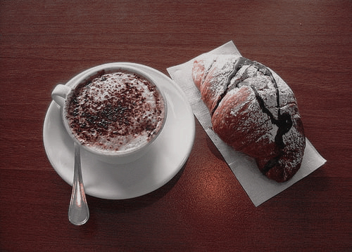
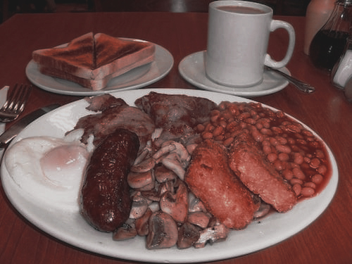

Colazioni dolci da tutto il mondo
Una lista di colazioni dolci per chi non riesce a resistere alle golosità dalla prima colazione.

Le più particolari colazioni salate che potrai mai assaggiare
Se sei una di quelle persone che appartiene al #teamsalato, ecco alcune colazioni tipiche che potrebbe piacerti provare.